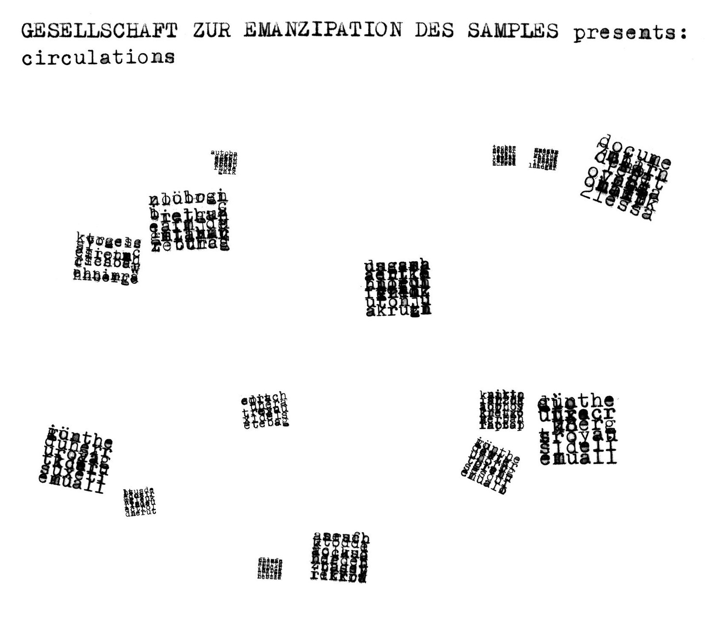

CRVI000025
Gesellschaft Zur Emanzipation Des Samples - Circulations
|||
Designed by Jens Reitemeyer · Faitiche · 2009
info
close
←
→

#Jens Reitemeyer
#Gesellschaft Zur Emanzipation Des Samples
#Faitiche
#2000s
#album cover
#white
#alltags
source: discogs.com ↗
rights & use